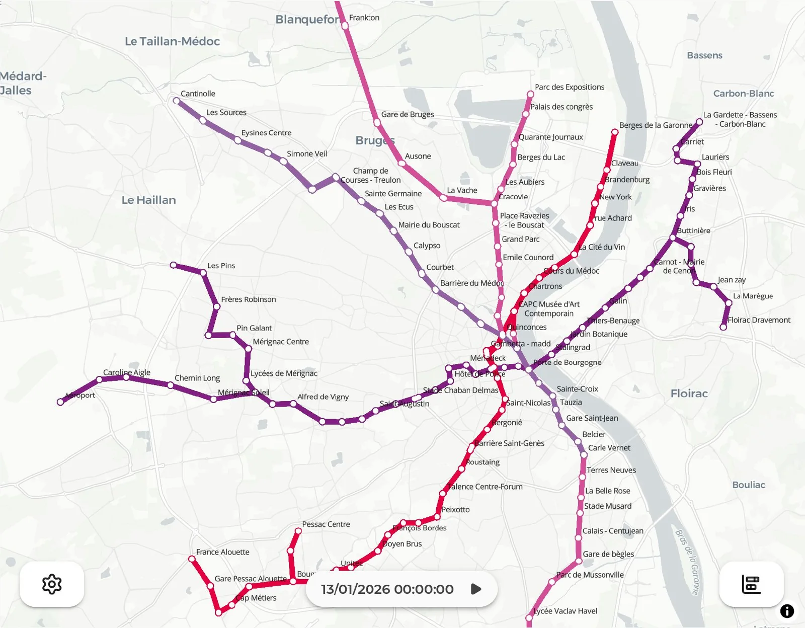
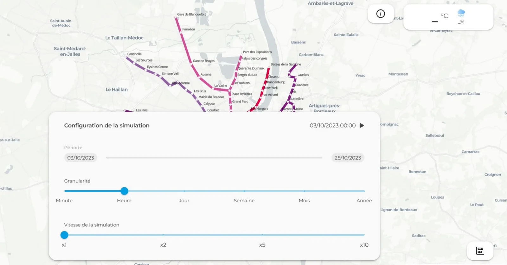
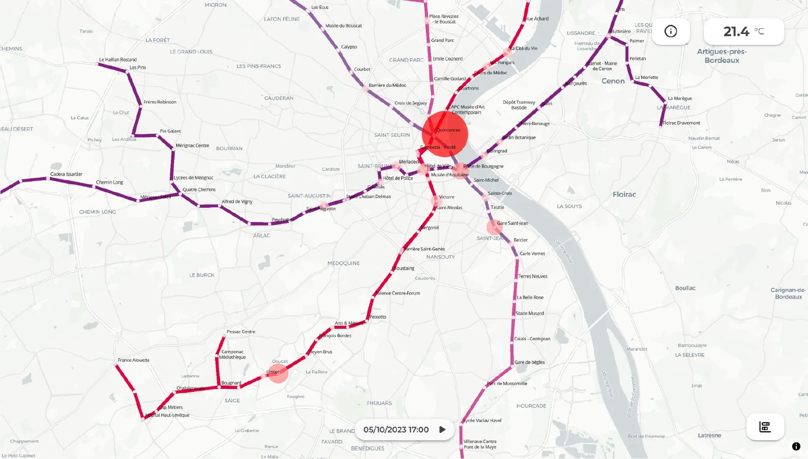
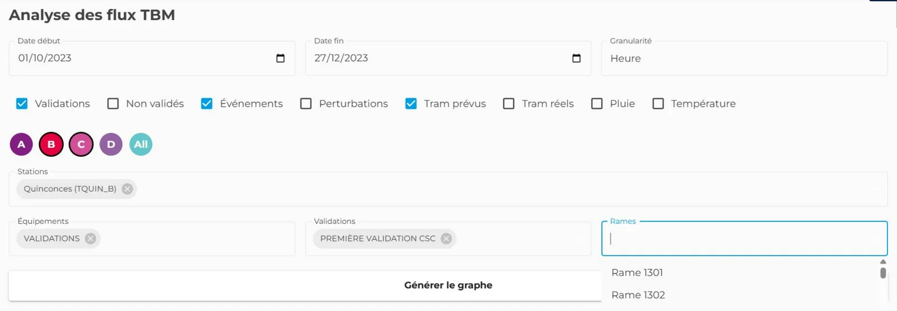
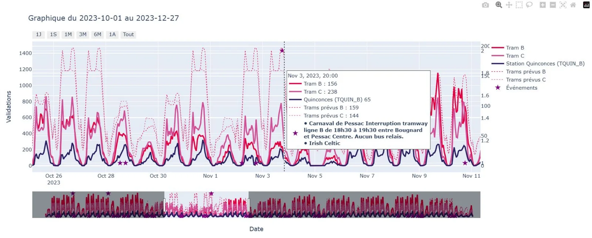
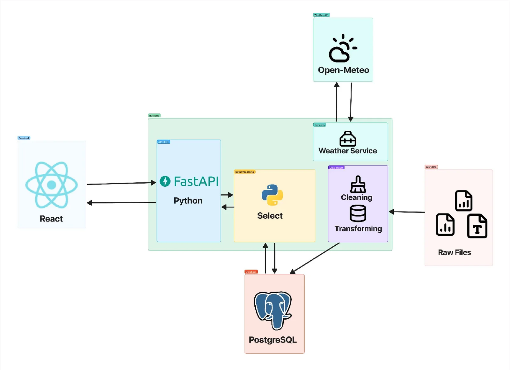
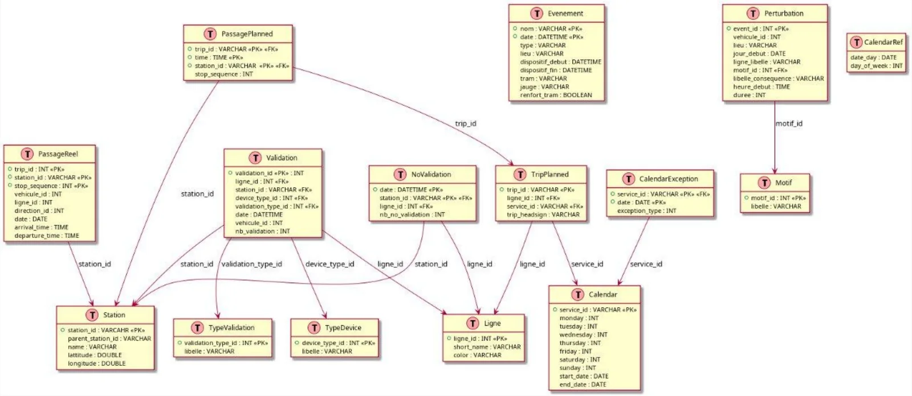
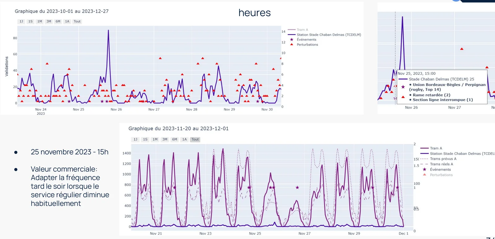
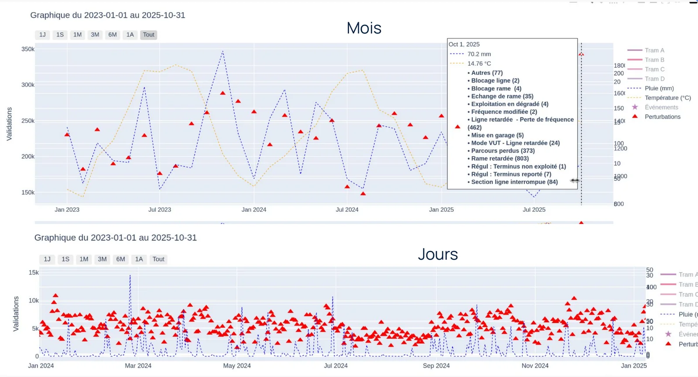
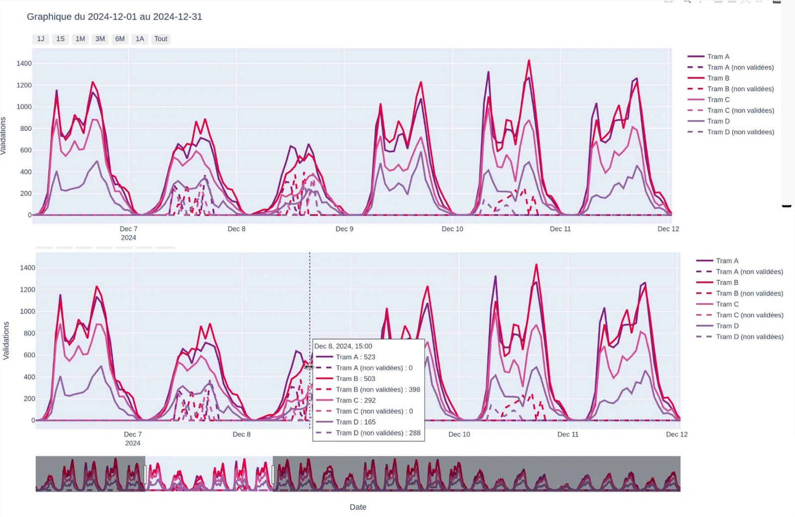

Ajustement statistique des données de fréquentation du réseau TBM
Un outil web avec carte interactive et graphiques pour comparer les validations réelles à l'offre prévue et chercher des corrélations avec la météo et les événements. Projet de dernière année à l'ENSEIRB-MATMECA, réalisé pour le laboratoire d'innovation TBM'ouv.
- Type
- Projet de dernière année, ENSEIRB-MATMECA
- Équipe
- 5 étudiants
- Pour
- Lab TBM'ouv (transports de Bordeaux)
- Stack
- React, TypeScript, Plotly, FastAPI, PostgreSQL, Docker
Le problème
TBM gère les tramways, bus, bateaux et vélos en libre-service d'une métropole de plus de 28 municipalités et 800 000 habitants. Son laboratoire d'innovation, TBM'ouv, voulait mieux exploiter les données déjà collectées.
- Un volume important de données restait inexploité.
- Il n'existait pas de moyen de les visualiser.
- Les conséquences des prévisions n'étaient pas analysées.
Notre objectif : un outil qui facilite l'analyse, pour comparer ce qui était prévu à ce qui s'est réellement passé, et chercher des corrélations entre les validations et d'autres paramètres comme la météo et les événements.
La solution
Une carte interactive du réseau

Une simulation pour voir le réseau évoluer


Un panneau d'analyse pour construire des graphiques


Sous le capot

Back end et pipeline de données
- API REST asynchrone en Python avec FastAPI et SQLModel, routes orientées métier et filtres dynamiques via les paramètres de requête.
- Import de gros volumes (CSV, Excel, GTFS) par blocs, puis nettoyage et normalisation, puis chargement dans PostgreSQL avec gestion des doublons.
- Les modèles Python servent de schéma de base : les tables sont créées automatiquement et la base est reproductible à partir du code.
- Service météo Open-Meteo (sans clé d'API) : température moyenne et cumul de pluie sur la période choisie, avec complétion des données manquantes.
- Docker automatise l'installation : un docker compose up donne une base structurée et peuplée, prête à être interrogée.
Des données hétérogènes, de nombreuses sources
Nous avons fusionné des fichiers de formes et de tailles très différentes : environ 1,5 Go de validations (janvier 2023 à novembre 2025), 1,3 Go d'horaires de trams, 10 Mo de perturbations, des calendriers d'événements, des comptages ponctuels de non-validations et 581 dossiers GTFS (environ 20 Go).
- Informations temporelles redondantes réparties sur de nombreuses colonnes.
- Valeurs par défaut incohérentes, comme des dates en 1899.
- Un même véhicule identifié différemment dans chaque fichier.
- Heures GTFS supérieures à 24 h (par exemple 25:13:42).

Ce que les données montrent



Bilan
- Une preuve de concept fonctionnelle a été livrée au laboratoire.
- Meilleure visibilité des données et piste d'optimisation du service à partir de chiffres réels.
- Montée en compétence sur Python, React, PostgreSQL, Docker et GitHub.
- Limites identifiées : la bibliothèque Plotly est peu adaptée aux changements dynamiques, et la carte thermique ainsi que le lien avec les graphiques sont à améliorer.
- Déploiement : nous avons comparé un déploiement local (contrôle total des données sensibles) à un déploiement en ligne (partage facilité, risque d'exposition plus élevé).
- Perspective : l'analyse prédictive.